NeurIPS 2026Oral
The Algorithm Is Not the Behavior Learned Priors Override Look-Ahead in a Chess-Playing Neural Network
1Fraunhofer HHI 2TU Dublin 3TU Berlin
{elias.sandmann, sebastian.lapuschkin, wojciech.samek}@hhi.fraunhofer.de
In short
Mechanistic interpretability has uncovered learned algorithms inside neural networks, from modular arithmetic to search and planning. One example is look-ahead in Leela Chess Zero, one of the strongest chess engines: its policy network picks a move in a single forward pass, and while doing so it already represents the moves that would follow it. Such work shows how these algorithms function when they succeed; less is known about how they fail. Reading out Leela's policy layer by layer on chess puzzles, positions with a single clearly winning line, we find many whose solution is found in the middle layers and then overridden at the output. This is not a failure of the algorithm: on these forgotten puzzles, look-ahead is still present and causally involved. Nor is the training objective at fault: Leela's training target would have favored the solution almost every time. Instead, the cause is learned priors for safe play: the last layers shift toward quiet moves and override the solution that look-ahead computed. When we steer the network against these priors, it solves most of the forgotten puzzles again.
A model can internally solve a problem and still output the wrong answer.
Reading every layer of Leela
Leela's policy network is a transformer that treats each of the 64 squares as a token and picks a move in a single forward pass, with no search. We extend the logit lens to its encoder-only Post-LN architecture. It decodes intermediate activations directly through the network's own output head, showing which move the network would choose if it stopped computing after a given layer. Every layer yields a highly interpretable policy that plays coherent chess, and playing strength rises monotonically with depth: in a round-robin tournament between the layers, from about 350 Elo at the input embedding to 2,268 for the full network.
Finding 1
Correct solutions appear, then disappear
We read out every layer on 10,000 Lichess puzzles. The full network solves 88.6% of them correctly. Among the rest are 449 puzzles (4.5%) that some intermediate layer solves completely and the final output does not. We call them forgotten puzzles.
To test whether look-ahead is still present in these puzzles, we build a larger set of forgotten puzzles, selected with the same filters as Jenner et al. (2024), who found look-ahead in Leela. Characterizing them reveals a clear pattern: the network typically trades a forcing sacrifice for a quiet move.
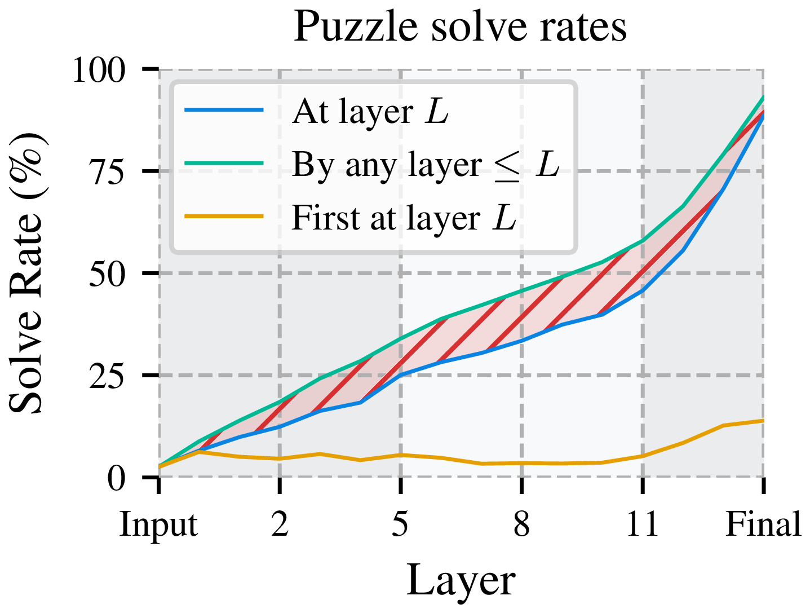
- 87%involve a sacrifice. The solution is a check in 77% of puzzles and a capture in 78%.
- 68%of the time the network plays a quiet move instead.
- 46%end in checkmate, about half of them mates in two, where even a single step of look-ahead would suffice.
- 97%of the time the network's own value head rates the position after the correct move higher than after the move it plays.
Finding 2
Look-ahead is still present on forgotten puzzles
What look-ahead means here. Jenner et al. showed that Leela looks ahead internally on the puzzles it solves: it represents its follow-up after the opponent's reply, the third move of the line, and this shapes its choice of the first move. Three results show this. The activations on the third move's target square strongly affect the output, an attention head in layer 12 (L12H12) moves information from there to the first move's target square, and a probe on the activations of these squares can read out the third move.
Is the look-ahead algorithm failing on forgotten puzzles? We repeat their analyses on our set of forgotten puzzles. As on puzzles the network solves, future moves of the correct line are represented, causally important and linearly decodable. So the look-ahead algorithm is not what fails. Instead, the solution is overridden at the very end: 63% of forgotten puzzles are still solved after the last attention sublayer, which places the override mainly in the final feed-forward layer.
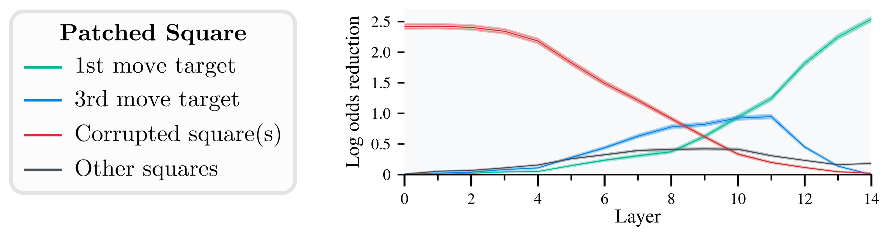
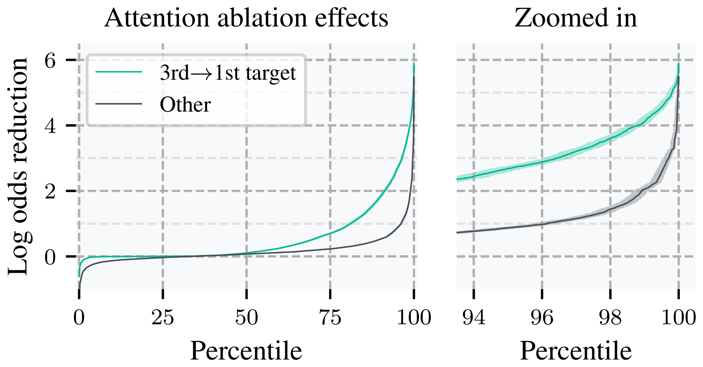
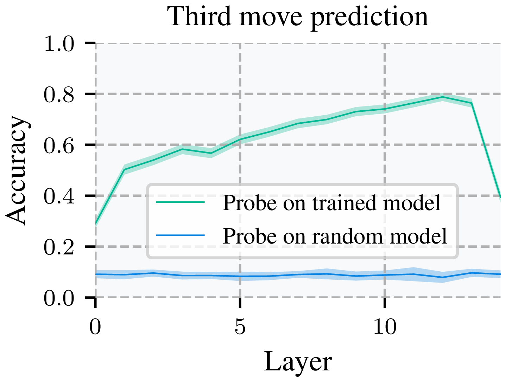
Finding 3
Late layers prefer safe play, and steering against it recovers solutions
What overrides the solution? On forgotten puzzles the network trades forcing sacrifices for quiet moves, which suggests that its final layers have learned to favor safe play. To test this, we measure which chess concepts each layer's policy favors, such as the safety of each king and the threats each side poses. Each concept is one of Stockfish's hand-crafted evaluation terms, and a layer favors a concept if the moves it prefers increase that term. Early and middle layers favor aggressive concepts, opponent king vulnerability and own threats. Late layers shift away from them, toward own king safety and fewer threats from the opponent. We call these learned preferences for safe-looking play safety priors.
To test whether these priors drive the override, we steer the activations at a single layer against them and measure the solve rate on held-out puzzles. For all four concepts shown, steering away from safe play helps, and for three of them it helps at every layer, far above random directions. The strongest single setting comes right before the override: after layer 13, steering the network to worry less about the opponent's threats raises the solve rate from 88.6% to 92.4%. It recovers 62% of the forgotten puzzles and also solves 34% of the puzzles that no layer had solved. Applied unchanged to our larger set of forgotten puzzles, which played no part in choosing it, the same setting recovers 72%.
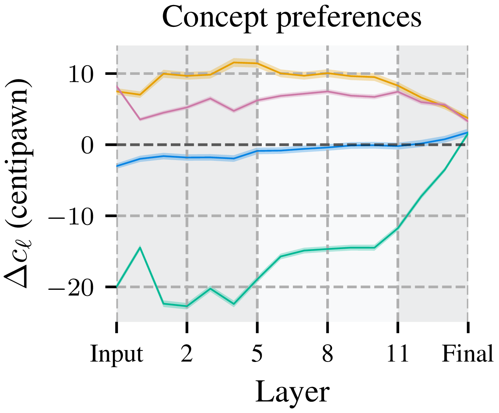
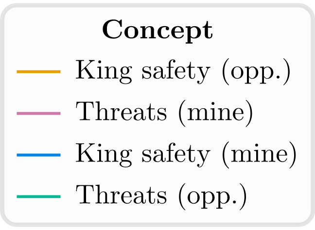
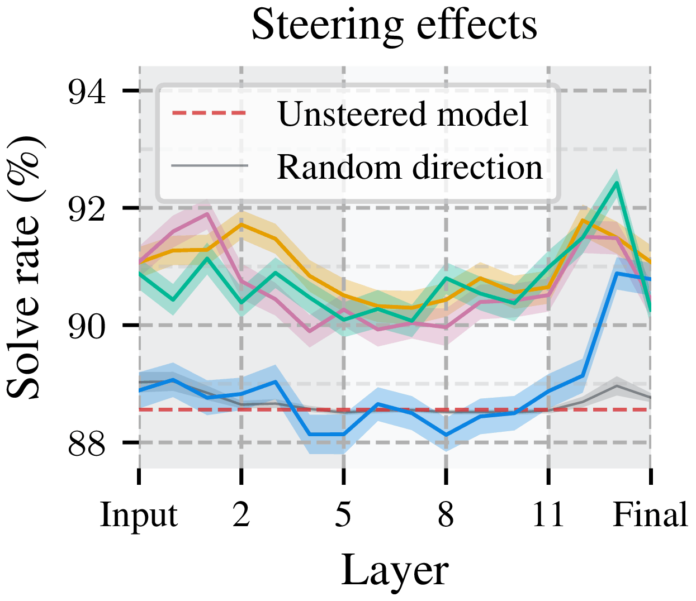
How concept preference and steering are defined
A concept c maps a position to a number, such as the opponent's king safety in Stockfish's hand-crafted evaluation (in centipawns), seen from the player to move, so positive values are good for that player. A move m from position s to s′ changes it by Δcm = c(s′) − c(s). The concept preference of layer ℓ is the expected change when moves are drawn from that layer's read-out policy πℓ:
Δcℓ = Σm ∈ legal(s) πℓ(m) · Δcm = 𝔼πℓ[Δcm]
In words: if the layer chose its move by sampling from its policy, this is how much the concept would change on average. A layer favors a concept when this is positive.
To steer, we add a direction to the residual stream hℓ after layer ℓ. The direction is the gradient of the full network's concept preference ΔcL with respect to hℓ, averaged over positions from ordinary games (no puzzles). It is scaled to the layer's mean activation norm and multiplied by a strength α:
h′ℓ = hℓ ± α · 𝔼[∇hℓ ΔcL] · 𝔼[‖hℓ‖] / ‖𝔼[∇hℓ ΔcL]‖
The gradient points where the concept preference rises fastest, so, to first order, adding it pushes the network's concept preference up and subtracting it pushes it down.
In the figure above, α is chosen per concept and layer on one half of the puzzles and evaluated on the other, from the grid α ∈ {±0.25, ±0.5, …, ±1.5}. The steering at the top of the page and the explorer below use fixed strengths from this grid, α ∈ {±0.25, ±0.5, ±0.75, ±1}.
Try it: steer a forgotten puzzle
Pick a puzzle, a concept and a strength. Every setting comes from the paper's sweep and is applied after layer 13. To tell whether the concept matters or any push of that size would do, we show how 50 random directions of the same norm do on this puzzle. To tell whether the puzzle is typical, we show how the setting does across all 449 forgotten puzzles.
The puzzles here are hand-picked examples.
Finding 4
The training objective would have asked for the solution
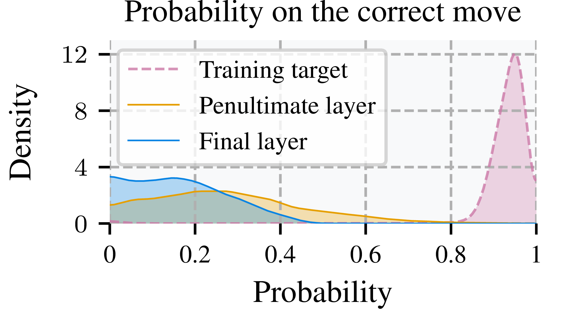
Could the training objective itself favor the quiet move? Leela's policy is not trained to solve puzzles. In self-play, each move is chosen by a tree search guided by the network, and the policy is trained to distill that search into a single forward pass: its target is how the search split its effort among the legal moves of the current position. We run this search on every forgotten puzzle, with the settings of the run that trained this network. The resulting training target puts on average 93% of its weight on the solution, and the solution is its top move in 99.4% of puzzles. Under the policy's own training loss, the penultimate layer is closer to that target than the final layer in 78% of forgotten puzzles. These positions most likely never came up in training, but had they, the objective would have asked for the solution. So the override does not come from the objective. It is consistent with a prior that is sensible on the positions Leela trains on and carries over to positions where it conflicts with the solution.
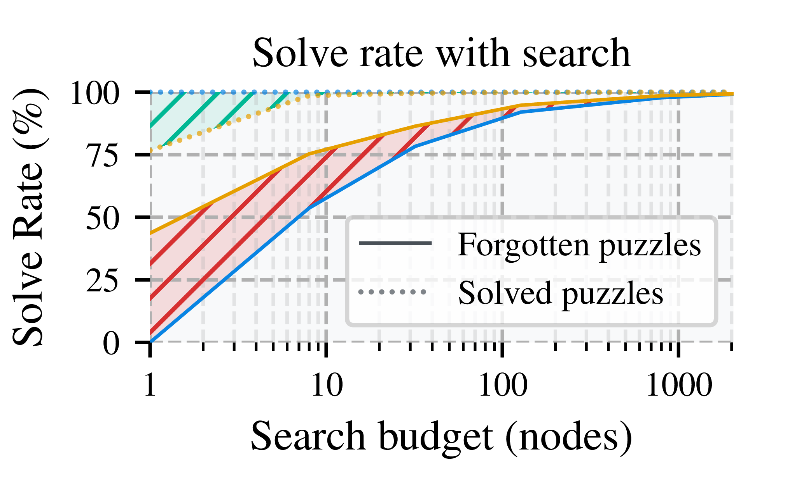
So far we have studied the policy network on its own. Does the override still matter when Leela uses search, as it does in deployment? With enough search, the engine finds almost all of the forgotten solutions: 97.8% at 800 nodes. But the final layer makes this more expensive: with 8 nodes, the engine finds 54% of them with the final layer's policy and 75% with a policy read from the penultimate layer. On puzzles the network already solves, the final layer helps instead.
Why this matters beyond chess
In Leela, a working look-ahead computation and a learned preference for safe play come from the same training, and in some tactical positions the preference wins: the right answer is computed internally but does not reach the output. The preference itself is a sensible generalization, since risky moves usually do not pay off. It fails in the rare positions that call for a sacrifice.
Interpretability. These findings show that an identified algorithm may not determine the output, and that a wrong output does not mean the capability is missing. Predictions of behavior from circuit analysis alone can therefore be incomplete. Mechanistic analysis can expose such cases and test what causes them.
Language models. The ingredients of the override do not require chess or search. Essentially every model trained today minimizes an expected loss and so learns priors that are right on average. Indeed, related overrides have been observed in language models: correct answers decodable at intermediate layers are overridden in late layers by false demonstrations (Halawi et al., 2024) or by sycophancy (Wang et al., 2026). They connect to concerns about hidden capabilities: computations present inside a model but not in its behavior (Gekhman et al., 2025), which may surface under distribution shift or adversarial inputs (Wei et al., 2023).
Reasoning models. Their training resembles Leela's. The language model is the prior that guides a search over chains of thought (Chollet, 2024), and reinforcement learning with verifiable rewards distills what that search finds back into the model, as Leela's training distills its tree search. In both, a softmax policy keeps every continuation possible, but the prior decides how much search it takes to reach it. A reasoning model trains on a limited number of sampled chains per problem. If it has learned a prior that is right on average but disfavors an unusual step a problem needs, as Leela's prior disfavors sacrifices, the correct chain would rarely be sampled, rewarded and reinforced. Whether such overrides actually occur in domains such as mathematical reasoning is an open question.
Questions we get
Why chess?
Chess gives a verifiable ground truth. Each puzzle has a single clearly winning line, so we can tell when an intermediate layer is right and the output wrong. And Leela has a known learned algorithm, look-ahead, whose presence we can test directly.
What counts as solving a puzzle?
A policy solves a puzzle if its top move is correct at each of the player's turns in the solution line, with the opponent's replies taken from the puzzle, or if it delivers checkmate.
Is this specific to one network?
The look-ahead and steering analyses use one network. Forgotten puzzles themselves appear in all six Lc0 networks we tested, which differ in width, depth and training generation (Figure 9 in the paper).
Could forgotten puzzles be an artifact of the readout?
The logit lens adds no parameters and learns nothing. It removes the later sublayers and decodes the rest with the network's own policy head, so everything it reads out was computed by the network itself. The read-out policies also play coherent chess, and their strength rises layer by layer (the layer bots below). Learned decoders such as the tuned lens are different: they are trained to match the final output, so their objective penalizes exactly the disagreement that defines forgotten puzzles.
Is "safety prior" a mechanism inside the network?
No. It names a tendency in the network's behavior, not a module we located. King safety and threats are our proxies for it, and grouping them as safety-related is our choice, not something built into Stockfish's terms. That four separately defined concepts show the same late-layer shift, and that steering along each of them improves the solve rate, suggests a property of the network rather than an artifact of one proxy.
Would an earlier layer be the better policy?
No. The penultimate layer plays at about 1,670 Elo, the full network at 2,268, and with search the final layer helps on puzzles the network already solves. The override costs only in rare positions that call for a sacrifice.
Is steering a general fix?
No. The safety priors were learned because they usually help: in ordinary games, risky moves rarely pay off. Puzzles are the exception by design, since their solutions are often sacrifices. Even there, steering trades one error for another: the best setting solves 519 more of the 10,000 puzzles but loses 129 that the network solved before. In ordinary play, weakening the priors would likely cost more than it gains. We use steering to test what causes the override, not to repair it.
More results
Playing strength of every layer
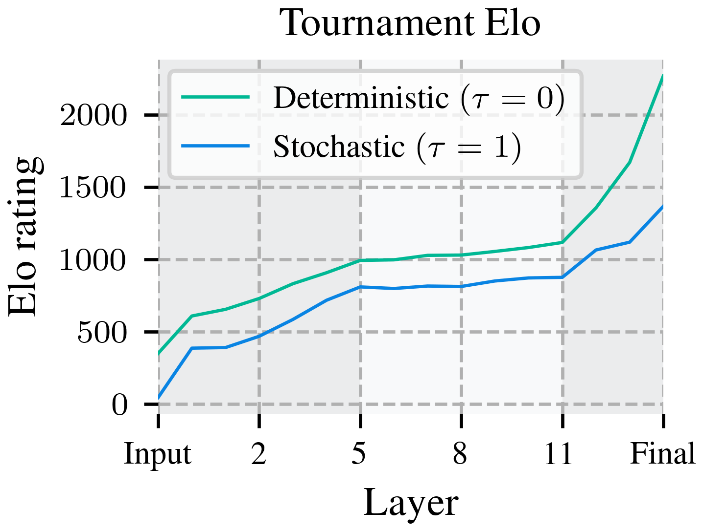
Play against a layer
Every layer's policy plays chess on its own, from the input embedding to the full network. Pick a layer and see what "layer 9 chess" looks like.
The layer plays like its Lichess bot, without search: it samples its first five moves from its policy, then always plays its most likely move. Its policy is computed on our server; after a quiet period the first move can take up to a minute.
Or challenge it on Lichess
Each card opens the bot's Lichess profile, where you can challenge it with a free Lichess account; the bots play bullet, blitz and rapid, rated or casual. Ratings are their current Lichess blitz ratings; the paper reports a snapshot from 28 October 2026. A green dot means the bot is online, orange that it is in a game; a challenge then waits until the game ends.
Solve rates by puzzle rating
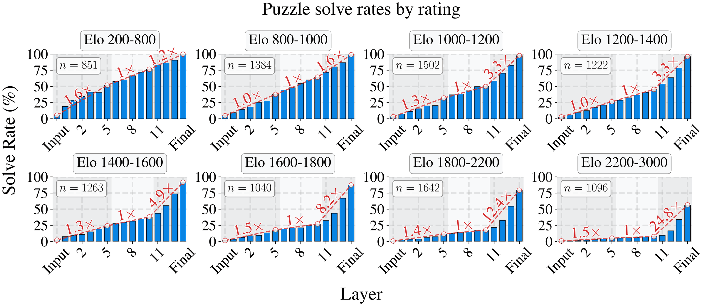
Citation
@inproceedings{sandmann2026algorithm,
title = {The Algorithm Is Not the Behavior: Learned Priors
Override Look-Ahead in a Chess-Playing Neural Network},
author = {Sandmann, Elias and Lapuschkin, Sebastian and Samek, Wojciech},
booktitle = {Advances in Neural Information Processing Systems},
year = {2026},
url = {https://openreview.net/forum?id=ULhusDnCQy},
eprint = {2508.21380},
archivePrefix = {arXiv}
}Acknowledgments
This work builds on the code and inference framework of Jenner et al. (2024) and Ruoss et al. (2024). It was supported by the Federal Ministry of Research, Technology and Space (BMFTR) as grants [BIFOLD (01IS18025A, 01IS180371I), xJuRAG (16IS25015B)]; the European Union's Horizon Europe research and innovation programme as grant ACHILLES (101189689); and the German Research Foundation (DFG) as research unit DeSBi [KI-FOR 5363] (459422098).